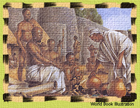

|
Civil war has broken out in another African land rich in gold. This land was once a remarkable state dominated by a place called Great Zimbabwe.

Now an empire called the Mwanamutapa Empire has taken the place of the Zimbabwean state. People called the Rozwi are trying to overthrow the Mwanamutapa kings and thus gain control of the rich gold trade. The Portuguese are interested in this civil war. They say that they want only to bring civilization and Christianity to the people there. But I suspect that they are interested in more than that in a land where, it is said, even the cows of the king wear collars of heavy gold.
|